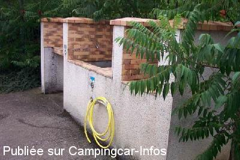

AA = Aire de services sur autoroute de :
A62 Toulouse=>Bordeaux PORTE D'AQUITAINE
(N° 40)
Accès/adresse :
Autoroute des Deux Mers
Sens Toulouse / Bordeaux
Sens Toulouse / Bordeaux
Latitude : (Nord) 44.19972° Décimaux ou 44° 11′ 58′′
Longitude : (Est) 0.50592° Décimaux ou 0° 30′ 21′′
Tarif : Gratuit
Type de borne : Artisanale
Services :


Autres informations :

Le 19/08/2005 par bernard59
Le 19/08/2005 par bernard59
de
jean olive
le 17/02/2010 :
Utiliser son propre tuyau à tous les sens du mot.
Utiliser son propre tuyau à tous les sens du mot.